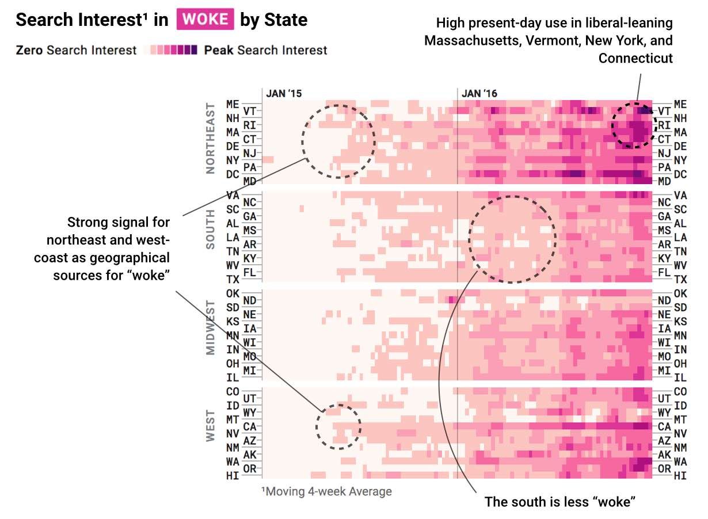

In 2014, I researched the musical origin of the word “shorty.” Turns out that Too $hort was the first to rap it and Lil Jon coined the southern-drawled “shawty.”
Shorty wasn’t pervasive, however, until 50 Cent intro’d In Da Club with “Go shorty. It’s your birthday.”
50 Cent, arguably, made “shorty” mainstream slang.
Identifying these moments is fascinating: the tipping point for when slang reaches the masses. If 2015 was the year of “Netflix and chill” and 2014 was “on fleek,” what slang tipped in 2016?
Using Google searches for words’ definitions, I examined slang that was once rarely searched but is now relatively popular. Here’s what blew up last year:
How the Kids Speak
Emerging* Slang, By the Year it Rose into Popularity
By “searches for a word’s definition” I mean a search for [word] + “define”, “dictionary”, or “definition.” This list excludes proper nouns and acronyms (full list here if you’d like to battle linguistics). To remove words attached to the news cycle, I filtered for terms that consistently rose in popularity throughout the year (which excludes terms such as “electoral college,” which spiked suddenly in November).
If you’re over 25 years old, these words still might seem foreign. While they’ve “tipped,” they’re still in an early stage of their lifecycle. Since I can decipher most of the slang from 2013 - 2015, perhaps 2016’s words need a few more months to bake before reaching elder Millennials and Gen X’rs.
Why did these words have an “In Da Club” moment and surge in popularity? I did some digging on 2016’s slang; here are three obvious catalysts:
Catalyst 1: Hip hop with slang as the title
Three of 2016’s top words are rooted in hip hop. There’s a long history of hip hop and slang: pre-Internet, it was arguably one of the richest transcriptions of African American Vernacular English (the source for copious English slang). Let’s examine the songs responsible for each word.
Broccoli (noun) - weed
Props to rapper D.R.A.M.: he single-handedly transformed “broccoli” into popular slang (#4 on 2016’s list). Ever since D.R.A.M. released the the song “Broccoli” in April 2016, searches for the word’s definition have climbed to about 75% of where “Netflix and chill” peaked in 2015.
It’s worth noting that D.R.A.M. did not coin “broccoli” as slang; E-40 used it at least 10 years prior (as did Raekwon in ‘97). But as with 50 Cent and “shorty,” D.R.A.M. pushed the word into mainstream English.
Juju (noun) - a dance
“Juju On That Beat” by Zay Hilfigerrr has over 100 million streams on Spotify. “Juju” refers to a dance, so linguists could argue that it’s a proper noun and not slang (but then what is “twerk”?). That said, it’s #3 on 2016’s list, a testament to hip hop’s effect on language.
Wavy (adj.) - progressive, cool, swag, well-dressed
“Wavy” has been around for many years, but only recently surged in popularity. All signals suggest that Ty Dolla $ign’s track “Wavy” was the cause, which dropped in early 2016, coinciding with the subsequent growth of the word (though it had been locally popular in Virginia well beforehand).
Ty Dolla $ign’s “Wavy” was never that popular (it didn’t even chart), and searches for wavy’s definition continue to grow. So unlike “In Da Club,” I think of Ty’s track as an initial spark rather than the cause. For all the kids using “wavy,” few probably know its roots (Max B. coined it) or that Ty Dolla $ign had any role in its recent popularity.
Catalyst 2: Politics
In the US, last year’s political circus tipped five of 2016’s top slang into the mainstream.
Woke (noun) - aware of (racial) social injustice
“Woke” is the one term on 2016’s list that’s been growing organically for at least a decade. There was no major event that propelled it into the spotlight – it just finally crossed the threshold of mainstream use.

There were some unique events in 2016 for “woke.” In terms of semantics, there’s the notion that 2016’s US election cycle whitewashed the term. Today, I see it used broadly as “political awareness,” beyond its historic racial connotations. Childish Gambino’s “Redbone” helped too (~50M streams on Spotify), which dropped in November 2016. The song’s hook repeats the phrase “stay woke,” helping to normalize the phrase.
Geographically, you’ll find early signs of “woke” in liberal-leaning blue states, such as Vermont, Massachusetts, Rhode Island, New York, and California. Relative to other states, folks in the south (specifically South Carolina and Arkansas) are falling behind on the “woke” trend.
Triggered (verb) - “getting filled with hate after seeing, hearing or experiencing something you can't stand” (via Urban Dictionary)
The word “triggered” has existed for years in psychology, short for “trauma triggers” (e.g., gunshots for a veteran who suffers from PTSD). Recently, this evolved into the politically divisive “trigger warnings” for books, films, and discussions that may trigger similar distress.
“Triggered” has now evolved into a quasi liberal-directed insult, effectively meaning “emotional meltdown.” For example, this Breitbart headline following Trump’s election victory, “Triggered Students Across Country Melt Down in Response to Trump Victory.”
Gaslighting (verb) - distorting/disputing facts and events
The etymology of “gaslighting” begins with the 1938 play “Gas Light.” For several decades, it typically referred to a form domestic emotional abuse where the victim is given false information so that they question their own memory and reality.
The word’s recent prominence is due to Trump’s use of facts (i.e., alternative facts, fake news, post-truth) or conflicting versions of events (e.g., the inauguration crowd size). “Gaslighting” is now a liberal critique of Trump’s disagreement with the media over what happened versus what didn’t.
Bigly (adj.) - big time
During the US presidential debates, Donald Trump’s use of “big league” was heard as “bigly,” thus creating a meme and a new word for both anti- and pro-Trump supporters.
SJW (noun) - Social Justice Warrior
SJW is an acronym for social justice warrior. It is now a derogatory term, often wielded against liberals. Here’s a great Urban Dictionary entry, “someone who repeatedly and vehemently engages in arguments on social justice on the Internet, often in a shallow or not well-thought-out way, for the purpose of raising their own personal reputation.” Similar to “woke,” it’s been slowly growing organically, and the 2016 election cycle likely tipped it over the threshold for mainstream use.
Among political words, it’s also one of the youngest terms on 2016’s list.
And because of its liberal nature, we can see it growing in left-leaning states such as Oregon and Vermont.
Catalyst 3: Internets
Dank meme (noun) - an (ironically) high-quality meme
The etymology of “dank meme” is complex, though Reddit is where it initially found momentum. What’s important is that it spread beyond the underbelly of Reddit sometime last year. While “dank” was initially used ironically, it’s now taken literally as “high-quality” by a more basic audience.
Holosexual (noun) - strong attraction to holographic objects
“Holo” and “Holosexual” took off last year, largely due to YouTuber Simply Nailogical’s obsession with holographic nail art.